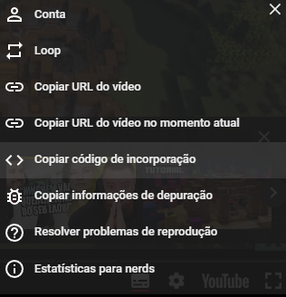

Teste de Vídeos
Vídeo Local
Este é um vídeo local com várias configurações aplicadas:
Configurações aplicadas:
- controls: Adiciona controles ao vídeo.
- width e height: Define o tamanho do vídeo.
- poster: Mostra uma imagem antes do vídeo começar.
- loop: Faz o vídeo reiniciar automaticamente.
- autoplay: Reproduz o vídeo automaticamente ao carregar a página.
- muted: Inicia o vídeo sem som.
- preload: Carrega o vídeo ao carregar a página.
- playsinline: Reproduz o vídeo no próprio elemento.
Vídeo do YouTube
Para vídeos do YouTube, é necessário usar o código de incorporação:
O código de incorporação pode ser copiado diretamente do YouTube.
